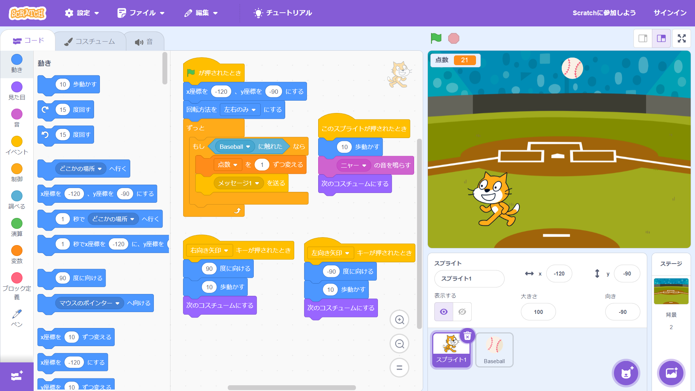

1週目のレポート ： 公大高専１年実習I-1
1a班2番 南海6000系
第1週目
1-1 サイエンスアート
1.内容
スクラッチを使って線を書くプログラムを作成した。このプログラムは旗を押したときに（0，150）の位置から、100歩動かす、-200歩動かす、75歩動かす、10°回す、色を3ずつ変える、 を36回繰り返し、一周すると止まり、色もほぼ一周する。
2.感想
少ないプログラムだけで、いろいろなパターンのアートが描けることが面白かった。
1-2 ゲーム

1.内容
スクラッチを使って猫がボールをキャッチすると得点が入るプログラムを作成した。このプログラムは左向き、右向き矢印を押したときにそれぞれの方向に10歩動かし、コスチュームを切り替える。 猫がボールに触れたときに点数を1ずつ変え、ボールにメッセージを送る。ボールはメッセージを受け取ったときに、隠して見えなくなる。
2.感想
ボールが落ちる場所や速度がランダムで、点数も表示されるのでゲーム性が高いと思った。
1-3 ホームページ作成
私のホームページ
1.内容
GitHubを使ってホームページを作成した。tmhrdoi/web2023のサイトを自分のGitHubにForkして編集した。
2.感想
他のサイトをそのまま自分のGitHubにForkして編集できることが便利だと思った。